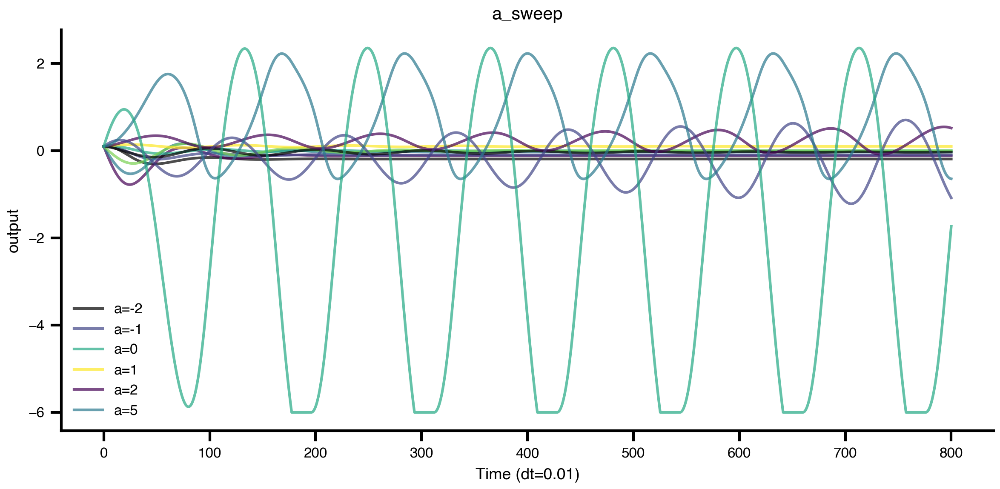
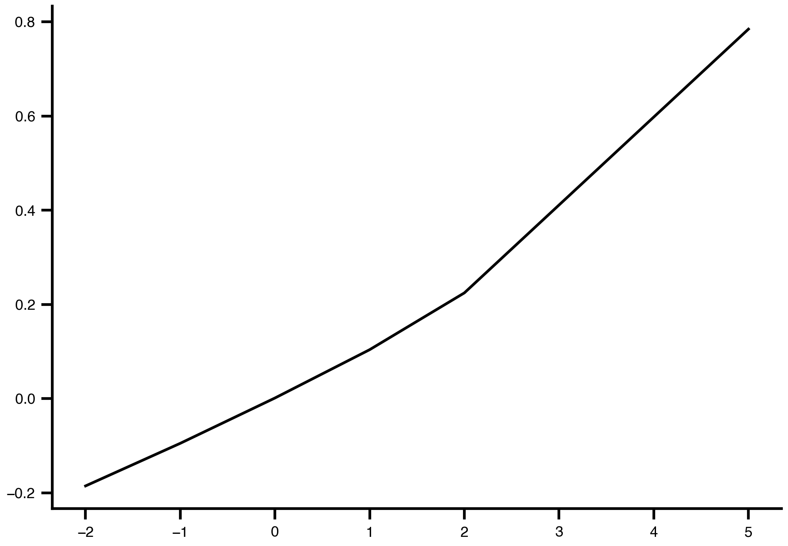
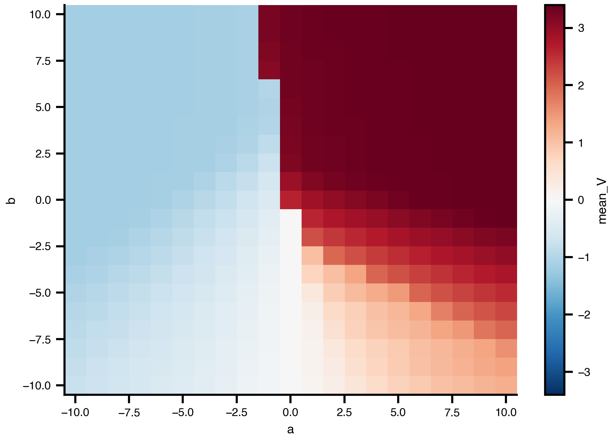
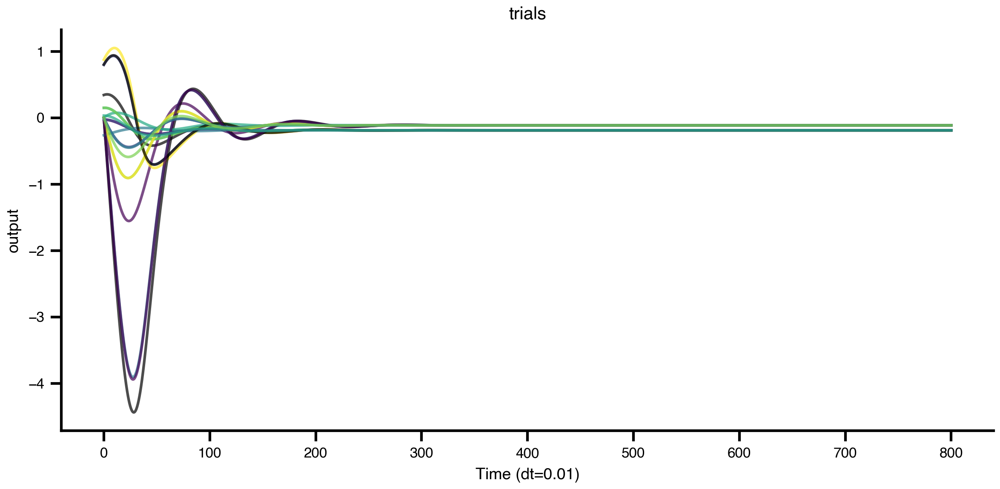

import bsplot
import matplotlib.pyplot as plt
from tvbo import Dynamics, SimulationExperiment
from tvbo.datamodel.schema import Exploration, ExplorationAxis
bsplot.style.use("tvbo")Parameter Exploration
1 Sweeping parameters declaratively
In Chapter 1 we changed parameters by re-instantiating the Dynamics. That is fine for one or two values, but it scales badly. TVBO has a first-class metadata object for this: Exploration.
An Exploration lives on experiment.explorations and is dispatched by the backend when you call .run().
1.1 A one-axis sweep
We take the Generic2dOscillator and sweep its bifurcation parameter a across five values.
model = Dynamics.from_db("Generic2dOscillator")
exp = SimulationExperiment(dynamics=model)
exp.integration.duration = 800 # ms
exp.integration.step_size = 0.01 # ms
exp.explorations["a_sweep"] = Exploration(
name="a_sweep",
space=ExplorationAxis(parameter="a", explored_values=[-2.0, -1.0, 0.0, 1.0, 2.0, 5]),
)
result = exp.run("tvboptim")
============================================================
STEP 1: Running simulation...
============================================================
Simulation period: 800.0 ms, dt: 0.01 ms
Transient period: 0.0 ms
Simulation complete.
============================================================
STEP 2: Running explorations...
============================================================
> a_sweep
Explorations complete.
============================================================
Experiment complete.
============================================================The result keeps the same shape conventions as a single simulation, with one extra axis for the swept parameter:
sweep = result.explorations["a_sweep"]
print("results shape:", sweep.results.shape, " axis:", sweep.axes[0].name)results shape: (6, 80000, 2, 1) axis: aExploration.plot() overlays the trajectories. Increasing a walks the system through a Hopf bifurcation: from a stable focus to a sustained limit cycle.
sweep.plot(overlay=True)
1.2 Observations
from tvbo import Observation
from tvbo.datamodel.schema import Range
exp.observations["mean_V"] = Observation(
name="mean_V",
source="V", # the state variable to observe
aggregation="mean", # aggregate over space (node dimension)
)
res = exp.run()
plt.plot(
res.explorations["a_sweep"].observations["mean_V"].a,
res.explorations["a_sweep"].observations["mean_V"].data,
)
============================================================
STEP 1: Running simulation...
============================================================
Simulation period: 800.0 ms, dt: 0.01 ms
Transient period: 0.0 ms
Simulation complete.
============================================================
STEP 2: Running explorations...
============================================================
> a_sweep
Explorations complete.
============================================================
Experiment complete.
============================================================
from tvbo import Observation
from tvbo.datamodel.schema import FunctionCall, Callable, Argument
import numpy
exp.explorations
exp.observations['mean_V'] = Observation(
name='V_mean',
source='V',
pipeline=[
FunctionCall(
name='spatial_mean',
callable=Callable(
name='mean',
module='np',
),
input='V',
),
],
)
exp.explorations["ab_grid"] = Exploration(
name="ab_grid",
space=[
ExplorationAxis(parameter="a", domain=Range(lo=-10, hi=10, step=1)),
ExplorationAxis(parameter="b", domain=Range(lo=-10, hi=10, step=1)),
],
)
res = exp.run()
mv = res.explorations["ab_grid"].observations["mean_V"]
# Most native — xarray.DataArray.plot.imshow respects coords automatically
mv.plot.imshow(x="a", y="b") # uses 'b' as y-axis, 'a' as x-axis (last dim → x)
============================================================
STEP 1: Running simulation...
============================================================
Simulation period: 800.0 ms, dt: 0.01 ms
Transient period: 0.0 ms
Simulation complete.
============================================================
STEP 2: Running explorations...
============================================================
> a_sweep
> ab_grid
Explorations complete.
============================================================
Experiment complete.
============================================================
1.3 Trial-based exploration
The same object also drives Monte-Carlo style replication via n_trials. Each trial uses different initial conditions and (if noise is configured) different noise realisations.
from tvbo.datamodel.schema import Distribution, Range
# exp.explorations.clear()
exp.dynamics.state_variables['V'].distribution = Distribution(domain=Range(lo=-1, hi=1))
exp.dynamics.state_variables['W'].initial_value = 0
exp.explorations.clear()
exp.explorations["trials"] = Exploration(name="trials", n_trials=10)
result = exp.run("tvboptim")
result.explorations["trials"].plot(overlay=True)
============================================================
STEP 1: Running simulation...
============================================================
Simulation period: 800.0 ms, dt: 0.01 ms
Transient period: 0.0 ms
Simulation complete.
============================================================
STEP 2: Running explorations...
============================================================
> trials
Explorations complete.
============================================================
Experiment complete.
============================================================
1.4 Recap
exp.explorations[name] = Exploration(...)declares a sweep — never assign a plain dict.ExplorationAxis(parameter=..., explored_values=[...])defines the axis.n_trials=NrunsNrandomised replicates.- The backend (
tvboptim) vectorises the sweep automatically; nothing else changes.
The next chapter takes the same Dynamics object and replaces brute-force sweeping with continuation, which tracks equilibria and limit cycles directly.